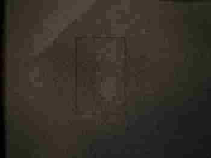
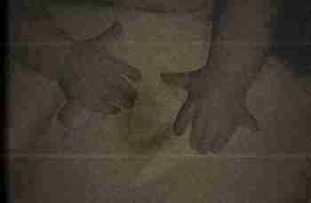
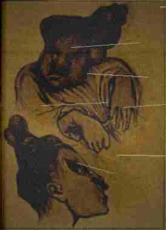
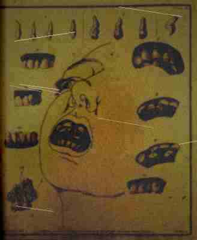

|
IMAGE DESCRIPTION (because the scan quality is bad and you might not be able to make everything out):
The photograph is black and white. High contrast. Taken with a flash in a dark room - you can see the flash reflecting off the wet concrete walls. The reflection is wrong though. It bounces off the walls the way light bounces off wet surfaces but it also bounces off the floor in streaks, like the floor is covered in something with a thin film on it. Like a membrane. The room is underground. No windows. Low ceiling, maybe 7 feet. The walls are rough poured concrete with visible form marks. In the upper left corner of the frame there is a dark stain on the ceiling. It is roughly the shape of a handprint but the fingers are too long and there are too many of them and it is not a stain. It is a PRINT. Something touched that ceiling and left a mark in the concrete. The concrete was not wet when the building was finished in 1935. Something touched it hard enough to leave a print AFTER it had set. I need to describe what is in the center of the photograph and I am going to do it very precisely because I need someone else to see what I see. I need confirmation. I wrote this description three times and deleted it twice because each time I type it out I notice another detail and I have to go back to the scan and look again and every time I look again I see something new and worse. It is approximately six feet long. It is lying on its side in a fetal position. It is naked. The skin is not one color. Most of it is the color of a bruise that is about two weeks old - that deep purple-black that happens when blood pools under the skin and starts to break down. But in patches, mostly around the joints and along the midline of the torso, the skin is a pale yellowish-white, like the belly of a fish. These pale patches are SMOOTH. Completely smooth. No pores. No hair follicles. No texture at all. Like skin that was never meant to be exposed to air. Like inside skin. The rest of the skin, the bruise-colored skin, has texture but its wrong - it looks PILLED, like an old sweater, like the surface is covered in thousands of tiny raised bumps. When I zoom in on the scan, each bump appears to have a tiny dark opening at the top. The skin is wet and taut. It looks like there is too much inside. In several places along the torso and the left thigh, the skin has split open. Not torn. SPLIT. Along lines. Along SEAMS. The splits are clean, almost surgical, with smooth edges that curl slightly outward, and what is visible underneath is not muscle or fat or anything I can identify. It is dark red, almost black, and it glistens, and it is TEXTURED - it looks like the inside of a cheek. Wet smooth tissue with a fine network of visible capillaries. And it is moving. Each split pulses independently. Not like breathing. Like swallowing. Like peristalsis. Like the stuff inside is slowly moving in one direction, cycling through the body. I think the body is digesting something. I think the thing it is digesting is Margaret Svensson.  close-up scan - tissue surface detail - the pilled texture of the new skin each bump has a small opening at the top. they open and close independently. i think they are breathing. The arms are wrong. They are the right length, roughly, but they bend in too many places. The left arm has at least five joints between the shoulder and the wrist. Not evenly spaced - clustered, three of them within a four-inch span near the elbow, as though the arm couldn't decide how an elbow was supposed to work and tried multiple configurations at once. The joints are swollen, bulging under the skin like a knuckle that has been broken and healed badly, and at each joint the skin is that pale fish-belly white, stretched so thin you can see dark shapes shifting underneath.  evidence scan - hand detail - supernumerary digits with additional knuckle joints the circular openings at the fingertips are visible in the original photograph this scan does not do them justice. they are worse in person. they are so much worse. The hand has seven fingers. They are arranged in a fan, roughly evenly spaced around the palm, which is wider than a human palm should be and nearly circular. The fingers are long - the longest one is perhaps nine inches - and thin, tapering to points. Each finger has at least four visible knuckle joints. The fingers are curled slightly inward, relaxed, like a sleeping person's hand, and that casualness is what makes it so bad. It is comfortable with those hands. It has had them long enough to rest in them naturally. The fingertips are dark, almost black, and the nails are gone. In their place, at the tip of each finger, there is a small circular opening, puckered, about the diameter of a pencil. The openings are wet. One of them, on the second finger from the left, is OPEN, and inside it I can see what looks like a ring of tiny teeth. Not sharp teeth. Flat teeth. Human teeth. Molars. A ring of human molars inside the tip of a finger. I think the fingers are how it feeds. I think the fingers are how it takes you apart. I think it puts them against your skin and the little mouths go to work and it is slow and you are alive for a very long time while it happens. The legs are drawn up against the torso and they are worse than the arms. The knees bend backward - not broken, not dislocated, bent backward as a DESIGN. As though it tried to copy a human knee from memory and got the direction confused. Or as though it found that backward knees work better for what it needs them to do. The feet are elongated, eighteen or nineteen inches from heel to toe, and the toes have fused together into a smooth flat surface, like a paddle or a fin, with a hard ridge along the leading edge. The sole of the foot is facing the camera and it is WORN SMOOTH. Polished, almost. From pacing. From walking in circles. The grooves in the concrete floor match the shape of these feet exactly. It has been walking that circuit for months. Maybe years. Practicing its walk. Getting the gait right. Learning to look natural. The bones in the shins are visible through the skin and they are wrong - they have been broken and re-knit over and over in slightly different configurations, each time a little closer to correct. I count at least eleven healed fracture lines on the left tibia. It has been breaking its own legs and re-healing them, adjusting the angle each time, iterating toward something that will pass as human. It is teaching itself how to have legs. Along the right side of the torso, between the hip and the armpit, there is a row of small openings in the skin. Seven of them. Each about the size of a dime. They are arranged in a neat line, evenly spaced, and the edges are smooth and healed - these are not wounds. They are permanent. They are FEATURES. They are slightly recessed into the flesh and the interior of each one is dark and wet and gently contracting and expanding, like they are breathing independently from the lungs. I do not know what they are for. I don't want to know what they are for. But the black log book entry for Aldric Berglund mentions "secondary respiration points along the lateral surface" and I think these are those.  fig. from black log book - cranial restructuring reference this was clipped from a medical text and pasted into the log book by the attending physician annotation in margin reads: "cf. subject 1, hour 72 - similar but MORE ADVANCED" The face. I have been putting this off. I described everything else first because I was trying not to think about the face. But I have to describe the face. The face is almost right. That is the worst thing about it. If you glanced at it, for a half a second, in dim light, you would think it was a woman's face. You would think: oh, a woman. Blonde. Scandinavian. Pretty, even. And then you would look away and go about your day and you would never know. You would NEVER KNOW. And that is the point. That is what 54 years of practice gets you. A face that passes at a glance. But the photograph is not a glance. The photograph is a long exposure in hard flash and it captures everything. The nose is slightly too small and shifted about a centimeter to the left of center. Not dramatically. Just enough that if you stared at the face for thirty seconds you would feel uneasy without understanding why. You would think: something is off. And then you would decide you were imagining it and you would look away. That is how good it is now. The wrongness is calibrated to be JUST below the threshold of conscious recognition. You sense it but you explain it away. A crooked nose. Everyone has imperfections.  medical reference - supernumerary dentition - pasted into log book by attending physician annotation reads: "subject 1 exceeded this density by hour 48. teeth still proliferating at time of full integration." the teeth in the photograph below are WORSE than this. there are MORE of them. and they are packed TIGHTER. The mouth is too wide by about an inch on each side. The lips are thin and pale and there is a visible crease at each corner where they join the surrounding skin, a crease that is too deep, like the mouth was installed rather than grown. The lips do not fully close. Through the gap you can see the teeth. There are too many teeth. Human mouths have 32 teeth. I tried to count them in the scan and I stopped at 40 and there were still more visible further back in the jaw. They are flat and broad, like human molars, but they are packed in too tightly, overlapping, some of them growing sideways into each other, some of them fused together at the root into double-wide plates. The gums are pale gray, almost white, and they look wet and slightly swollen, like they are still actively producing teeth, like the mouth is still under construction, still adding inventory. Two of the teeth in the front are different from the others. They are smaller. More refined. They look EXACTLY like Margaret Svensson's front teeth would have looked. They are her actual teeth, I think. Still in the jaw. Still in place. Everything else around them has been replaced but those two teeth are original equipment. The eyes are open. They are looking at the camera. I need to be very specific about this because this is the part that made me throw up and it was not the disgust that made me throw up it was the RECOGNITION. The eyes are almost perfect. They are blue. Pale blue, the color you see in old Scandinavian women who grew up on farms. They are the right size. They are the right shape. The eyelids fold correctly. The eyelashes are present and the right length. If you covered the rest of the face and just looked at the eyes you would say: those are a woman's eyes. Pretty eyes. Kind eyes, even. But they do not blink. The photograph is a long exposure - there is motion blur on the chest from breathing - and the eyes are SHARP. Perfectly sharp. She did not blink once during the entire exposure. Humans blink every 4 to 6 seconds. She held her eyes open and perfectly still and focused on the lens the entire time. Because she wanted the photographer to see her eyes. She wanted whoever developed this photograph to look at her eyes and see something familiar. Something trustworthy. Something human. And it works. The eyes are the most human part. They are the part it has spent the most time perfecting. They are the lure. And they are FOCUSED. Not just pointed at the camera. Focused. There is depth in them. There is intelligence. There is patience. And there is something else that I cannot name but that I recognized when I saw it, something that made my whole body go cold, and it was this: the eyes are FOND. They are looking at the camera with FONDNESS. The way you look at something you have been waiting for. The way you look at food when you are very, very hungry and the plate is finally in front of you and you are about to begin. It is smiling. The too-wide mouth is pulled back at the corners. Every muscle in the face is engaged in the smile. It is smiling the way a person smiles when they are trying very hard to smile correctly. Like someone told it: humans smile when they want to appear friendly. And it is doing that. It is appearing friendly. It is performing welcome. But a human smile involves about 12 muscles and the other muscles in the face relax. In this face, nothing is relaxed. The forehead is smooth and tight. The cheeks are pulled up. The muscles around the eyes are contracted. Even the muscles in the neck and jaw are visibly engaged. It is using EVERY muscle in the face to smile. It is smiling with muscles that humans do not use for smiling. The result is a smile that is technically correct but uses the entire face as a mechanism. It is a smile that has been engineered. Iterated. Tested. Adjusted over thousands of attempts across decades in the dark. The hair is blonde. Long. Past the shoulders. Matted with something dark and wet but clearly blonde. It is well-maintained at the scalp. The roots are healthy. The hair is GROWING. Whatever this thing is, it is alive enough to grow hair. To maintain hair. Blonde hair. Swedish hair. Margaret Svensson's hair, still growing from Margaret Svensson's scalp, fifty-four years after Margaret Svensson was absorbed into something that wears her skin like a suit it is still tailoring. Margaret Svensson was blonde. She was 34 years old. She was on the cleaning staff. She swept the lower corridors every Wednesday and Friday evening. She had a husband named Erik and two daughters. She disappeared November 22, 1942. Her family was told she moved back to Sweden. They never checked. In 1942 you didn't check. You just believed what the principal told you and you grieved quietly and you moved on. This photograph is from the same envelope as documents dated February 1943. Three months after she disappeared. Three months of being digested alive and rebuilt from the inside out. She was not dead when this photograph was taken. The chest shows motion blur consistent with breathing. The exposure time was approximately 2 seconds based on the flash equipment available in 1943. She breathed at least once during those 2 seconds. She was alive. Her heart was beating. Her lungs were working. Her eyes were focusing. Her face was smiling. She was alive and she was aware and some part of her - some fragment of Margaret Svensson still embedded in that thing like a fly in amber - was looking through those blue eyes at the camera and SMILING. Was she happy? Was she screaming inside and the smile is just the thing using her face? Or did it change her all the way through? Did it reach into her brain and adjust her until she LIKED what had been done to her? Until she was GRATEFUL? The black log book entry for Subject Svensson M., dated 12/22/42, one month after absorption, includes the following note: "Subject vocalizing. Producing sustained sounds consistent with humming. Melody identified as 'Du Gamla, Du Fria' (Swedish national anthem). Subject's personnel file indicates Swedish origin. Conclusion: deep memory integration is occurring. The organism is not merely copying motor patterns. It is accessing episodic memory. Personality. Identity. It is not replacing Margaret Svensson. It is BECOMING Margaret Svensson. Or rather, it is becoming something that believes it is Margaret Svensson. Something that hums her favorite songs while it walks in circles in the dark on feet that have too many bones, in a body that is no longer human, with a face that is almost finished." She was humming. In the dark. Alone. In that room. She was humming a song from her childhood while her body was being rewritten around her. I don't know which is worse. That it took her mind. Or that it left it. [END DESCRIPTION] |